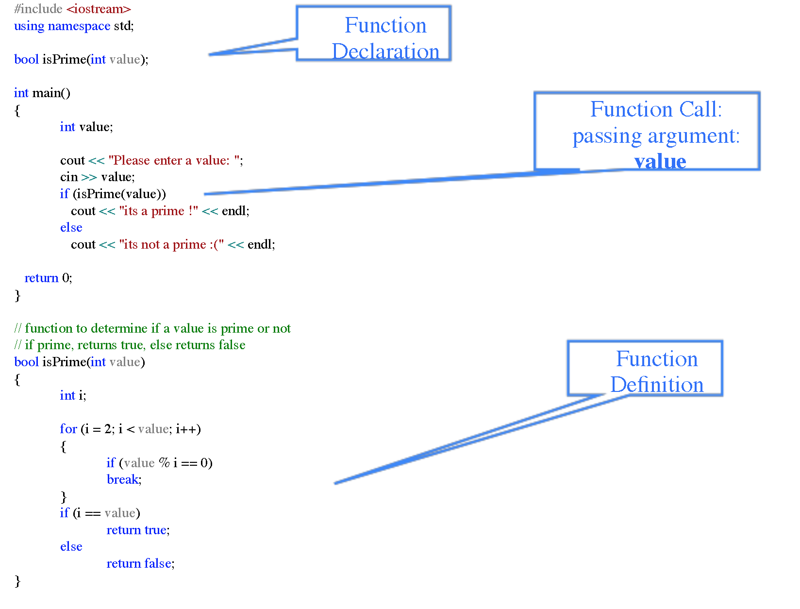

class: center, middle # INFO 450 Spring 2020 --- # Week 3 - Jan 30, 2020 --- # Homework Review * <i>(practice 1)</i> Write a program that continually accepts positive values from the user, calculates the square of that value and outputs the results to the console. When the user enters '0', execution should stop. * <i>(practice 2)</i> Write a program that continually accepts values from the user, determines if the value is a prime number and prints the result to the console. When the user enters a 0, then execution stops. * <i>(practice 3)</i> Write a program that continually accepts a year value from a user and determines if it is a leap year. * The year can be evenly divided by 4 * If the year can be divided by 100 it is NOT a leap year, unless * The year is also evenly divisible by 400, then it is a leap year. * 2000 and 2400 are leap years * 1800 and 1900 are not leap years --- # github Home work for this week: - Email me the link to your github repo: e.g. https://github.com/chrisfauerbach/chf_info450_spring_2020 * chfauerbach@vcu.edu - By Thur (Jan 30, 2020) , class start (7P), have the following in the <i>week2</i> folder of your github repo: * e.g. e.g. https://github.com/chrisfauerbach/chf_info450_spring_2020/week2/ * <i>practice1.cpp</i> - from last slide * <i>practice2.cpp</i> - from last slide * <i>practice3.cpp</i> - from last slide --- program1.cpp : Get numbers and square them. ```c++ #include <iostream> #include <cmath> using namespace std; int main(){ int input_variable = -1; while (1) { cout << "Please enter a number so I can square it! " << endl; cin >> input_variable; if (input_variable == 0){ break; } cout << input_variable << " squared is " << pow(input_variable, 2) << endl; } cout << "You entered 0, I'm out!" << endl; return 0; } ``` --- program2.cpp : Get a number and determine if it's a prime. ```c++ #include <iostream> #include <cmath> using namespace std; int main(){ int input_variable = -1; bool is_prime = 0; while (1) { cout << "Please enter a number so I can determine if it's prime or not." << endl; cin >> input_variable; if (input_variable == 0){ break; } is_prime = 1; for (int x = 2;x < input_variable;x++){ if (input_variable % x == 0){ is_prime = 0; } } if (is_prime){ cout << input_variable << " IS a prime number!" << endl; } else { cout << input_variable << " is NOT prime number." << endl; } } cout << "You entered 0, I'm out!" << endl; return 0; } ``` --- program3.cpp : leap year ```c++ int main(){ int input_variable = -1; while (1) { cout << "Year, so I can determine if it's a leap." << endl; cin >> input_variable; if (input_variable == 0){ break; } cout << (input_variable % 4 == 0) << endl; cout << (input_variable % 100 == 0) << endl; cout << (input_variable % 400 == 0) << endl; if (input_variable % 100 == 0 && !( input_variable % 400 == 0)){ cout << "This is not a leap year." << endl; }else if( input_variable % 4 == 0 ){ cout << "This is a leap year." << endl; }else{ cout << "This is not leap year." << endl; } } cout << "You entered 0, I'm out!" << endl; return 0; } ``` --- # Review ```c++ #include <iostream> using namespace std; int main(){ int i; int myInt = 6; char c; char myChar = 'D'; bool b; bool myBool = false; i = myFloat; myInt = i++; f = ++myInt % 3; c = myChar++; b = !myBool; cout << i << " " << myInt << endl; cout << f << " " << myFloat << endl; cout << c << " " << myChar << endl; cout << b << " " << myBool << endl; } ``` --- # Version Control What is and why use version control? * A system that keeps track of your coding changes and versions * Allows for collaborative development * Allows you to know who made what changes and when? * Allows you to revert any changes ( file or entire projects!) and go back to a previous state --- # `git` is a version control system * Other common version control systems are subversion (svn), CVS and Mercurial * Visual Studio has built-in integration to git. You can commit your work locally then sync your copy of the repository to a remote repository # Github is a SaaS version of git. SaaS == Software as a Service <i>As you can tell, we'll be using GitHub for our assignments. --- # Functions * A <i>function</i> is a group of statements that perform a task. * Every C++ program has at least one function: <i>main</i> * There are two types of functions: * Library functions <i>cos()</i>, <i>pow()</i> * User defined functions * Why use functions? * Reusability * Abstraction * Modularity --- # User Defined Functions <i>return_type function_name(parameter list){ // body of the function } </i> --- # Return Type and Name * <strong>Return Type</strong>: The return type is the data type of the value the function returns back to the calling code. Some functions perform the desired operation without return a value. In this case, the return type is <strong>void</strong> * <strong>Function Name</strong>: This is how you identify this function and use it in code. This function name and parameter list together constitute the <i>function signature</i> --- # Anatomy of a function ```c++ // Function determines if an interger is prime or not. // bool = return type // isPrime = function name // int value == formal parameters bool isPrime( int value ){ int i; for (i = 2; i < value; i++){ if (value % 1 == 0){ break; } if (i == value) { //Get it? return true; // Returning a true value } else { return false; // Returning a false value } } } ``` --- # Function Declarations * A function signature or declaration tells the compiler about a function name and how to call it. The actual body of the function can be defined separately. ```c++ int myFunction(int param); ``` * From the previous example, <i>isPrime</i> the following is the function declaration: ```c++ bool isPrime(int value); ``` * Parameter names are not import is function declaration only their type is required, so following is also a valid declaration: ```c++ bool isPrime(int); ``` --- # Calling a function * To use a function, you will have to call or invoke it. * When the function is invoked from any part of the program, it executes the code defined in the body of the function. * When a program calls a function, program control is transferred to the called function. * A called function performs defined tasks and when its return statement is executed or when its function-ending closing brace is reached, it returns program control back to the calling function. * To call a function, you simple need to pass the required <i>arguments</i> along with the function name, and if function returns a value, then you can store the returned value. --- # User defined function  --- # Function Parameters - Passing values * The formal parameter behaviors like other variables inside the function, are created upon entry into the function and destroyed upon exit. * While calling a function, there are three ways to pass arguments. |Call Type|Description| |--|--| |By value| This method copies the actual value of an argument into the form parameter. In this case, changes to the parameter inside the function have no effect on the argument.| |By reference| This copies the reference of an argument into the formal parameter. Inside the function, the reference is used to access the actual argument used in the call. This means that changes made to the parameter affects the argument. | |By pointer| This method copies the <i>address</i> of an argument into the formal parameter. Inside the function, the address is used to access the actual argument used in the call. This means that changes made to the parameter affects the argument.| --- # Huh? --- # Huh? This is one concept that's critical to our long term understanding of C++. --- # By Value - 'copies' the value ```c++ #include <iostream> using namespace std; int AddTwoNumbers(int input_number, int second_number); int main(){ int one = 0; int two = 0; int result = 0; char answer = 'Y'; do{ cout << "Enter one: "; cin >> one; cout << "Enter Length: "; cin >> two; result = AddTwoNumbers(one, two); cout << one << " + " << two << " = " << result << endl; cout << "Another one? enter Y or N: " << endl; cin >> answer; } while ((answer=='Y') || (answer == 'y')); return 0; } int AddTwoNumbers(int input_number, int second_number){ input_number += second_number; return input_number; }``` --- # By Reference - 'references' the same memory ```c++ #include <iostream> using namespace std; int AddTwoNumbers(int &input_number, int &second_number); int main(){ int one = 0; int two = 0; int result = 0; char answer = 'Y'; do{ cout << "Enter one: "; cin >> one; cout << "Enter Length: "; cin >> two; result = AddTwoNumbers(one, two); cout << one << " + " << two << " = " << result << endl; cout << "Another one? enter Y or N: " << endl; cin >> answer; } while ((answer=='Y') || (answer == 'y')); return 0; } int AddTwoNumbers(int &input_number, int &second_number){ input_number += second_number; return input_number; }``` --- ```c++ #include <iostream> using namespace std; void getDimensions(int &length, int &height); int main(){ int length = 0; int height = 0; char answer; do{ getDimensions(length, height); cout << "Dimensions: " << length << " " << height << endl; cout << "Another one? enter Y or N: " << endl; cin >> answer; } while ((answer=='Y') || (answer == 'y')); return 0; } void getDimensions(int &length, int &height){ cout << "Enter height: "; cin >> height; cout << "Enter Length: "; cin >> length; return; } ``` --- # Variable Scope & Lifespan * All variables have <i>scope</i> and <i>lifespan</i> * The scope of a variable is the area of the program where teh variable is valid. * A global variables scope is valid from the point it is declared to the end of the program. * A local variables scope is limited to the block where it is declared and cannot be accessed (set or read) outside that <i>block</i> * A block is a section of code enclosed in curly braces. * It is possible to define a local variable with the same name as a global variable. In this case the local variable takes precedence over the global. * A variables <i>lifespan</i> refers to how long a variable lives. That is when during the execution does a variable have memory and retain its value. --- # Variable Scope ```c++ #include <iostream> using namespace std; int total; // declare global total int main(){ total = 0; int num = 0; for (int num = 0;num < 10;num++){ int a; cout << "Enter a number: " << endl; cin >> a; total += a; } cout << "num: " << num << " total: " << total << endl; return 0; } ``` --- # A word on global variables * A global variable is defined outside of ALL function definitions. * An identifier which is global can be accessed <i>anywhere</i> in the file, in any function which appears below the definition of the variable. * Some people want to do it because they think it makes function easier to write - No parameter lists! Everything is global! * <strong>Using GLOBAL variables is considered NOT good style. They are most certainly generally not allowed in this class.</strong> * If you are working as part of a team on a program, if you create a global variable, there is NO WAY to prevent other team members from using/changing your global - you have no way to control access. * If you want a function to be general, you do NOT use a global variable - it is much more difficult to keep changing the global variable between calls than it is to call the function with different arguments. * They make testing and debugging much harder. * Seriously, NEVER, use it. --- # One Exception to NEVER using Globals * A valid use for global variables can be with declaring a constant variable, one that will never change and is needed globally throughout the program. ```c++ #include <iostream> using namespace std; const float PI = 3.14159265358979323846; int main(){ cout << "Pi is: " << PI; } ``` --- # Homework! <strong>This is due Tuesday night by midnight.</strong> Assignment 1: Write a program that asks the user for the radius of a circle and using a function, calculate the circumference of the circle. Requirement: The function MUST match this signature: ```c++ double calculateCircumference(double radius); ``` You MUST use a `const` declaration of PI in the global scope. github/-your repo-/week3/circumference.cpp <strong> Assignment 2 on next slide </strong> --- <small>Complete the program below. The only things you are allowed to change are inside those two functions at the bottom. Don't touch anything else.</small> github/-your repo-/week3/build_functions.cpp ```c++ #include <iostream> using namespace std; char get_user_input(); void to_upper_case(char &letter); int main(){ char user_input_letter; cout << "Type in a letter grade, lowercase or uppercase." << endl; if ('0' != (user_input_letter = get_user_input())){ to_uppser_case(user_input_letter); switch (user_input_letter){ case 'A': cout << "Super Great job on an A!" << endl;break; case 'B': cout << "Great job on a B!" << endl;break; case 'C': cout << "Good job on a C!" << endl;break; case 'D': cout << "Keep at it, you can get there." << endl;break; case 'F': cout << "F is for #fail" << endl;break; default : cout << "This is not a valid grade: " << user_input_letter << endl; } } cout << "You have entered 0. Exiting." << endl; } char get_user_input(){ //Implement this function } void to_upper_case(char &letter){ //Implement this function } ``` --- # Next Week! <strong>Arrays</strong> <strong>Strings</strong> --- --- #